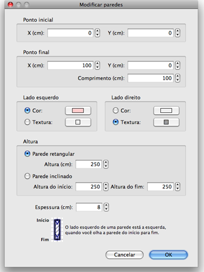

| Editando paredes | |||
Você pode editar a posição e tamanho das paredes, com o mouse ou pelo menu
Plano > Modificar paredes... Quando uma é selecionada no plano, você pode também mover seus cantos, com o indicador de tamanho que aparece em cada parede selecionada.
|

|
Quando o ponteiro do mouse está em cima do inicio ou do fim de uma parede selecionada, ele muda para
indicar que você pode arrastar aquele ponto. Enquanto o botão do mouse estiver pressionado, o tamanho da
parede é mostrado. Uma parede também pode ser editada através de sua janela de propriedades, dando um clique duplo na parede no plano da casa, ou escolhendo Plano > Modificar paredes... depois de selecioná-la.  Na janela de proprieades, você pode modificar as coordenadas de início e fim, as cores do lado direito e
e esquerdo da parede, sua largura e altura. |
|